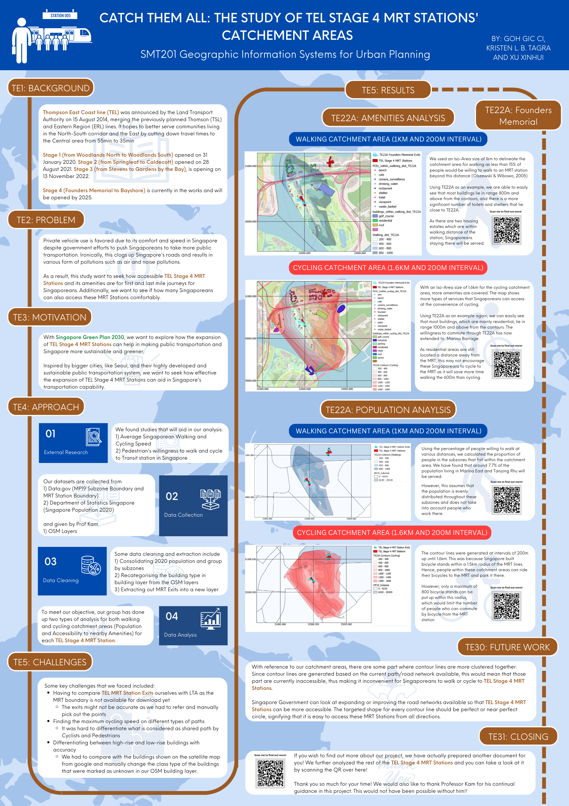

Catch Them All: The Study of TE Stage 4 MRT Stations’ Catchment Areas
Introduction
This website provides an overview of our assessment of the accessibility and catchment areas of the Stage 4 Thomson-East Coast line MRT stations.
Motivation
With Singapore Green Plan 2030, we want to explore how the expansion of TEL Stage 4 MRT Stations can help in making public transportation and Singapore more sustainable and greener. Presently, private transportation is preferred due to its ease and comfort.
Objectives & Methodology
As a result, this study aims to see how convenient TEL Stage 4 MRTS stations are for first and last mile journeys of Singaporeans and its accessibility by walking and cycling. Amenities and Population analysis will be conducted to assess its suitability to encourage Singaporeans to use public transportation. These are the steps that we will take:
Use QNEAT3 to obtain the Iso-Areas and Buffer Regions for all TEL Stage 4 MRT Stations
Conduct categorization of Buildings and Points of Interests for Amenities Analysis
Calculation of Catchment Area and Catchment Population at Subzone Level for Population Analysis
Analysis and Lesson Learnt from Amenities and Population Analysis
Key Findings
At the end of our study, we are able to find that all MRT stations are effective in improving Singaporeans' first and last mile journeys due to greater convenience and accessibility. On top of that, the catchment area that the population TEL serves are useful due to the lack of public transportation in these regions.
We found that TE27 Marine Terrace and TE26 Marine Parade are on par in being the most effective station in encouraging public transport use because the amenities in these areas are of high density usage, thus enabling these stations to reach the largest number of people as well.
On the other hand, TE22A Founder's Memorial's location may not be ideal for encouraging public transportation as it is the least effective in reaching out to a variety of amenities, and a large population.
Therefore, with the effectiveness of these MRT stations, we can conclude how well first and last mile journey, through walking or cycling, has been improved.
Posters
Townhall Poster
Here is the poster used at the Townhall presentation:

Here are the posters belonging to the QR codes:
TE22A – Founders Memorial

TE23 – Tanjong Rhu

TE24 – Katong Park

TE25 – Tanjong Katong

TE26 – Marine Parade

TE27 – Marine Terrace

TE28 – Siglap

TE29 – Bayshore